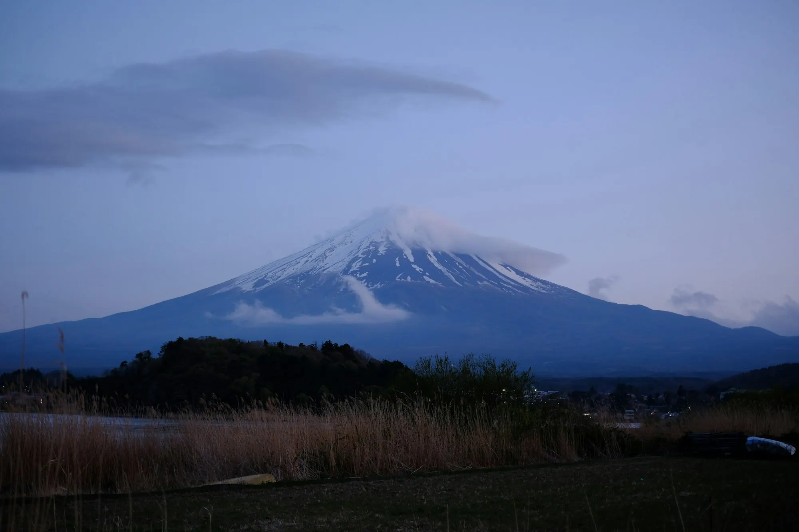
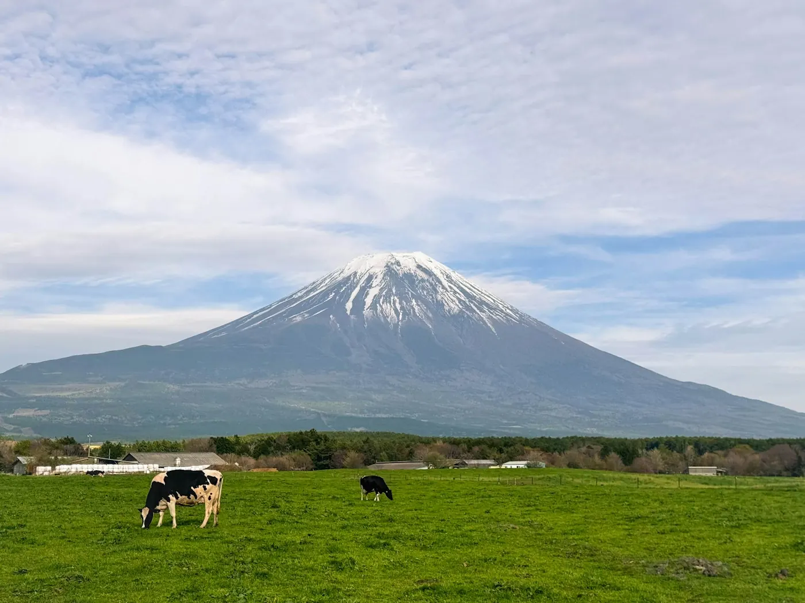
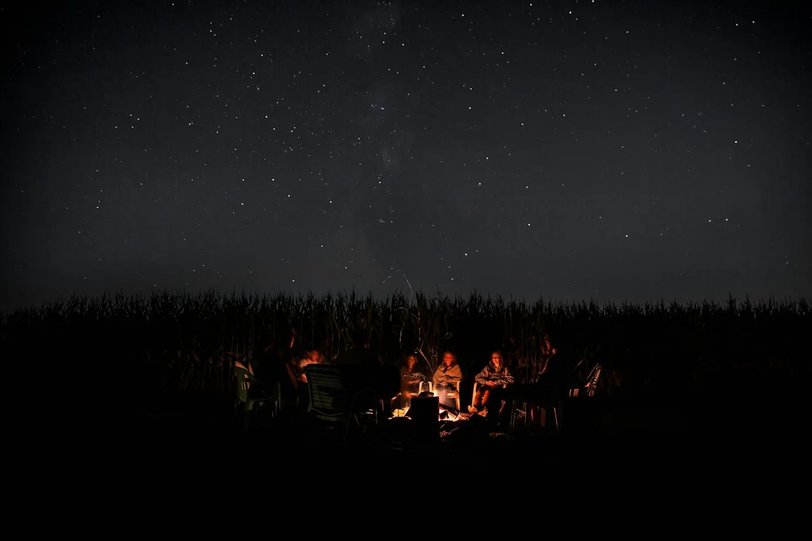
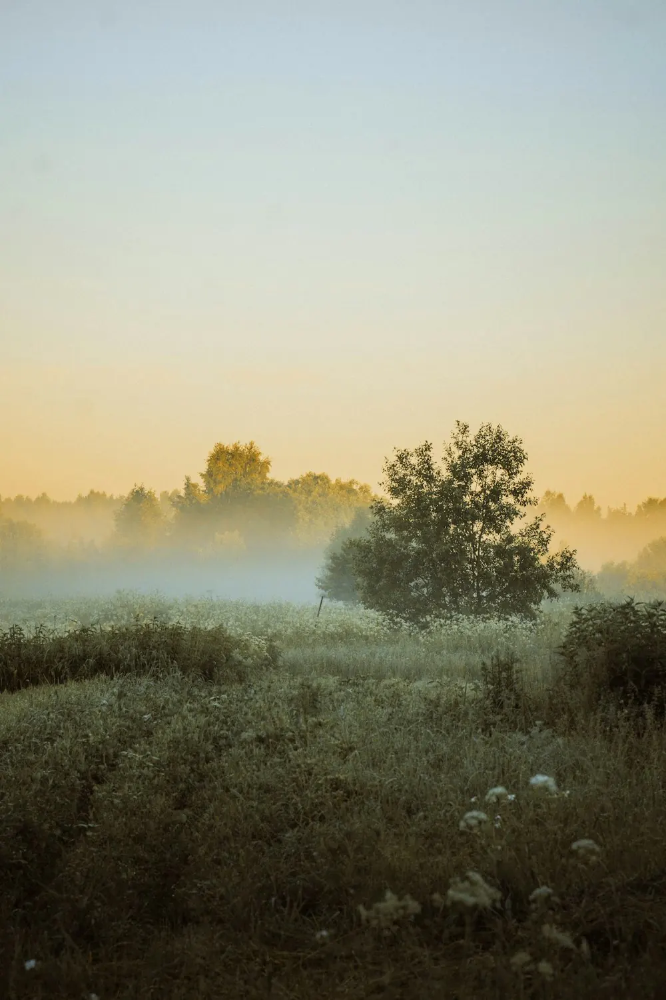
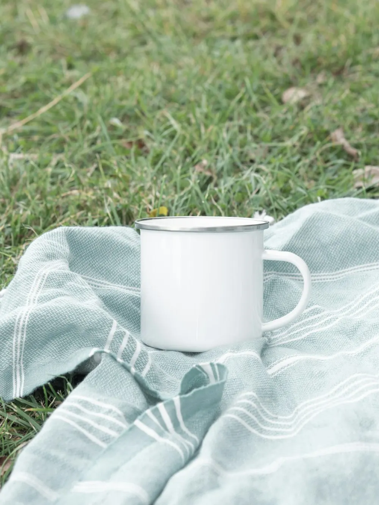
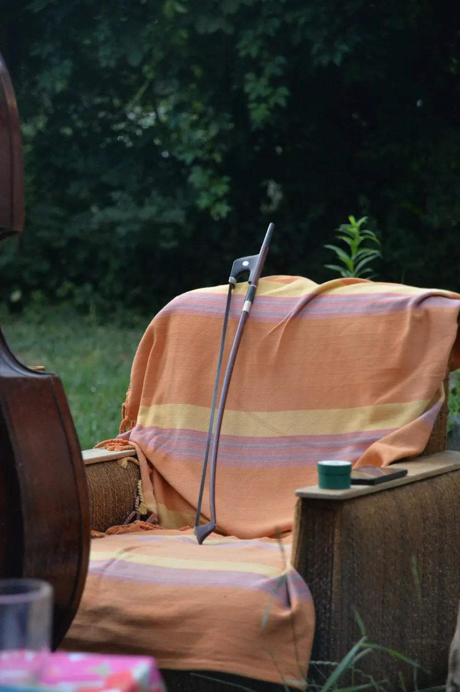

ASAGIRI 静岡・朝霧高原｜グランピング
富士を望む、 朝霧のテント。
標高900メートルの高原に、
白いテントが並んでいます。
目の前には、さえぎるもののない富士山。
夜は焚き火を、朝は霧の流れを眺めて。
STYLE この宿での過ごし方
富士のふもとで過ごす、ある一日。
-

AFTERNOON15:00
草原で、富士を眺める
牧草地の向こうに、富士山がまるごと見える。
椅子をひとつ出して、雲の動きを追いかける。 -

NIGHT20:00
焚き火を囲む
日が落ちると、高原は一気に冷えこむ。
火のそばで、星が増えていくのを待つ。 -

MORNING6:00
霧が晴れていくのを待つ
テントを開けると、あたり一面が霧の中。
少しずつ、富士の姿が浮かび上がってくる。


INFORMATION 宿泊のご案内
- 客室
- テント 1張（ウッドデッキ付き）
- 定員
- 4名まで
- 広さ
- 20㎡＋デッキ 15㎡
- 設備
- ベッド2台、焚き火台、チェア、照明・電源、薪ストーブ（11〜4月）。シャワー・トイレは共用棟
- 料金
-
- 平日¥38,000〜
- 休前日¥46,000〜
- チェックイン
- 14:00〜18:00
- チェックアウト
- 10:00
※標高が高く、夏でも夜は冷えこみます。上着をお持ちください。
ACCESS アクセス
- 所在地
- 静岡県富士宮市詳しい場所は、ご予約の確定後にお知らせします
- 車
- 新東名高速道路 新富士ICから約40分
- 電車
- JR富士宮駅から車で約35分駅までの送迎あり（前日までに要予約）
- 駐車場
- 1張につき1台分（無料）